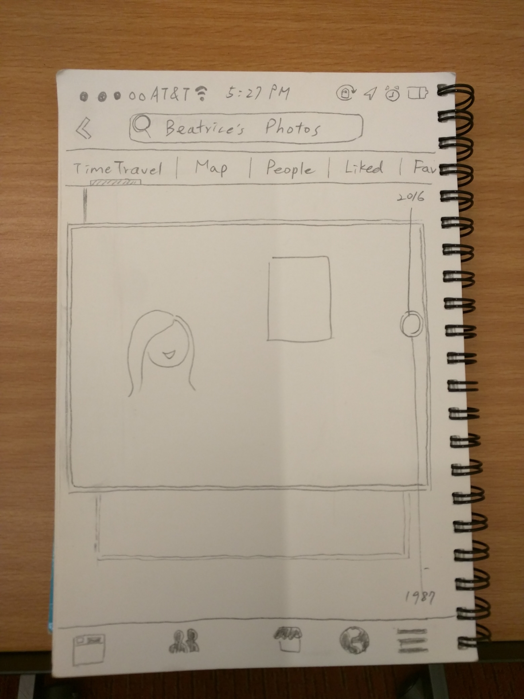
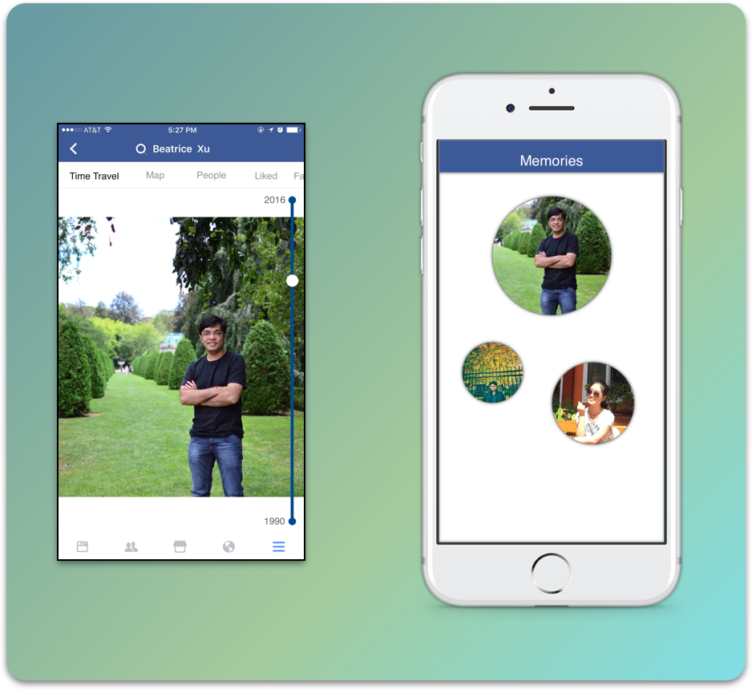

Design
Design Philosophy: To re-design FB photos to make search usable, intuitive and natural to the users.
Tools: Paper sketching, lo-fi prototyping
Whiteboarding:
We took to the whiteboard and started listing out all our findings and started walking through the user experience of a typical user who searches for an image. We explored the possibility of using FB's natural language search for photos. We also wanted the search to be a visual search that the user can recognize in a short span of time. FB's likes and Comment count can be assumed to have the most social memory and hence we wanted to return search results organized by its "social attraction".
Wireframing:
We started wireframing various concepts to test them out. In the process we wanted to make sure that the user's mental model is preserved. For instance, "show me the photos I took at Mark's party" will return a cluster of images that tags to the specifc search keywords. FB seem to have integrated such high level searches on their home screen search bar and hence using those same functionalities seem to be very plausible in the future.
To enhance the UX, we created few mockups that changes the thumbnail size based on the "social attractiveness". We also wanted to display all the search results but making few of them really obvious and larger than others based on the social ranking. For the interaction, we thought about a simple yet intuitive way of gliding one's finger over an array of thumbnails to get a preview (magnified thumbnail) of the picture on which the current finger rests.


Prototyping:
With the limited time left, we wanted to create a medium-high fidelity prototype in sketch that captures few of the important feature we envisioned the final product to contain.

Feedback from FB:
One of UMSI Almuni connected with us throughout the design competition and he provided feedback about the design. He really liked the idea and the concept and felt that the use of User's mental model to design the interactions was a great approach. He did however warn us that the mental model is very subjective of the user's demographics and the cultural background and hence more than just a mental model needs to be taken into account while designing a social platform for all users.